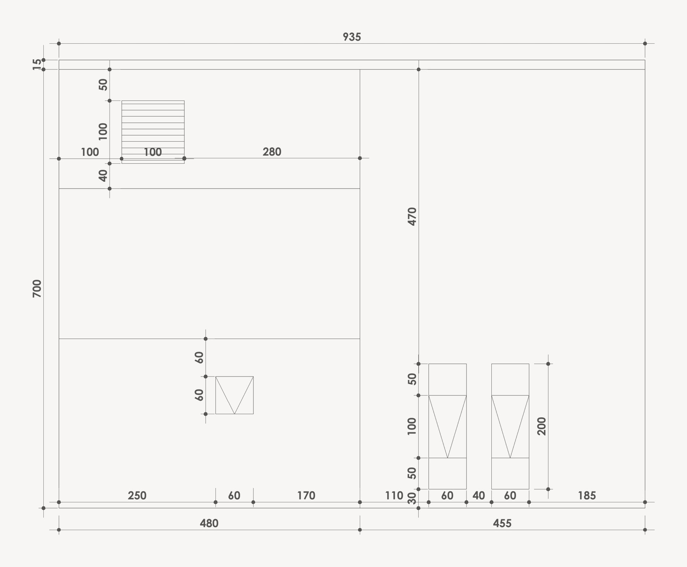
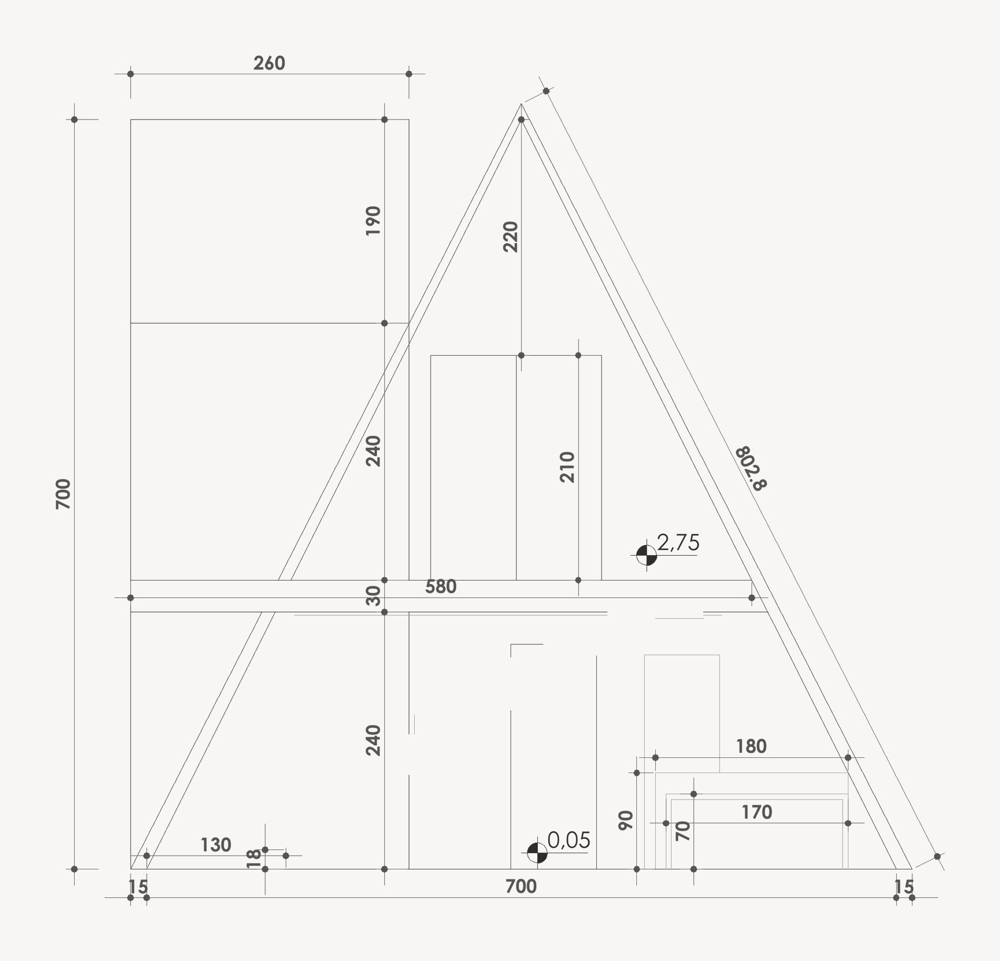
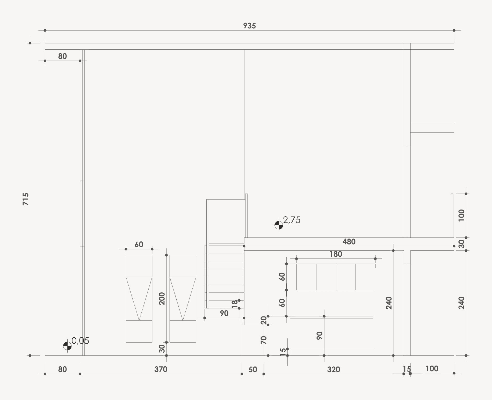

obras / chalés
Chalé Analândia

Cabana A-frame de dois pavimentos em steel framing, com piscina e churrasqueira.
O triângulo tem 7,00 m de base por 7,00 m de altura. No térreo ficam sala, cozinha, lavanderia e banheiro. No pavimento superior, a +2,75 m, a suíte.
Paredes e laje são em light steel frame. A piscina e o telheiro da churrasqueira seguem em concreto armado, com cobertura de madeira no telheiro.
- Local
- Analândia · SP
- Área total
- 132,03 m²
- Casa
- 90,39 m² em dois pavimentos
- Telheiros e piscina
- 23,64 m² + 18,00 m²
- Terreno
- 630 m²
- Sistema
- Steel framing, paredes e laje em LSF
- Cobertura
- Metálica, 91,69 m²
- Escopo
- Projeto executivo e projeto legal
- Etapa
- Projeto · 2025
Plantas


Fachadas



Cortes



